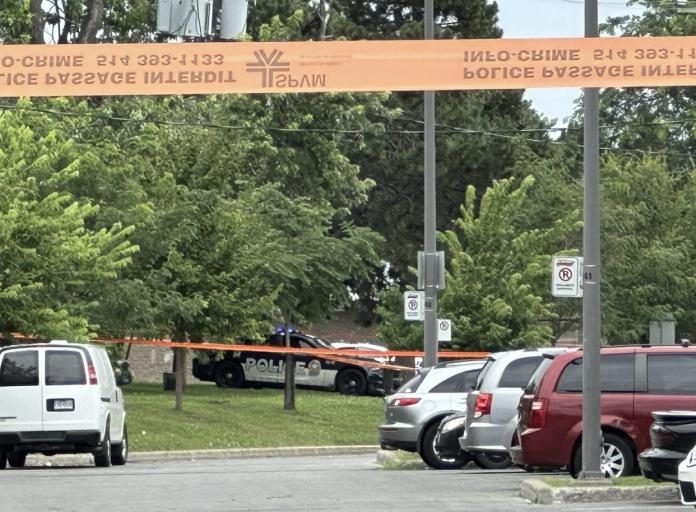

据CBC报道，周日晚上在蒙特利尔西岛（West Island）发生大规模枪击，造成三人受伤，其中两人伤势严重。
据蒙特利尔警方（SPVM）表示，周日晚上8点左右，有人拨打 911 报警，称发生冲突，可能涉及至少一把枪。
SPVM的一名发言人说，警察赶到现场，在Dollard-des-Ormeaux地区Salaberry大道和Davignon街的拐角处附近，“对嫌疑人采取行动”。据悉，该地区是一个居民区和商业区。
一颗流弹甚至击中了Davignon街一户人家的窗户，里面住着一名七岁的孩子。
警方没有提供进一步的细节，因为对这起事件的调查已移交给魁北克的警察监督机构BEI负责。
消息人士告诉CBC，当警察到达时，一名嫌疑人试图偷车逃跑。然后嫌疑人向警察开枪，引发了一场激烈的交火。
双方交火共开了近30到40枪，击中了嫌疑人和另外两人。
住在附近的Ahmed Ali说，他最初听到了几声枪响，担心流弹会射进他家。他说，枪击发生后，警察涌入了该地区。
“这非常令人担忧，”他说。
负责调查这起涉及警察的伤亡案件BEI在周一表示，最初的911报警电话是有人在家中目睹了一场争吵。她告诉当局她听到了枪声。
当911接线员派出警察时，嫌疑人离开了受害者的家，试图偷车逃离现场。
嫌疑人用枪威胁附近一辆汽车的司机，但司机逃跑了。当警察到达时，嫌疑人走近另一辆车，旁边有三个人。
就在这时，警察和嫌疑人交火，开了几十枪。据CBC的消息称，共开了30至40枪。
嫌疑人和两名路人被击中。警方最初表示，嫌疑人和一名路人情况危急，但截至周一中午，他们预计两人都没有生命危险。
该机构表示，已指派7名调查人员调查此案，这是一个不同寻常的大数字。魁北克省警方正在调查警方开枪之前发生的事件。
编译：YUAN
图片：citynews